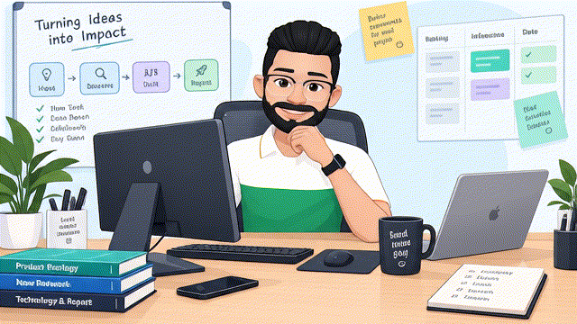

$ whoamiEnterprise AI Product Builder
Gaurav Pandvia
Senior PM · Enterprise AI & Hybrid Cloud · Engineer turned PM who still builds
- 🧩
I turn complex, real-world problems into tech-powered products, breaking them down with first principles and systems thinking.
- 🏢
By day, I work on an Enterprise product for 6,000+ customers managing private Cloud Infrastructure workloads.
- 🚀
I'm relentlessly building with AI to ship what works.
- 🧪
On weekends, I experiment with AI.

$200M+ ARR product (Nutanix Cloud Manager)6,000+ customers10+ yrs enterprise tech
By day · Nutanix
Day job: Nutanix
Senior Product Manager on NCM, a $200M+ ARR product serving 6,000+ customers. My current focus: making AI a first-class part of how they run their private clouds.
Strategy
In-product AI assistant
Wrote the product strategy for the assistant built into NCM.
Integration
NCM MCP Server
Led the integration that exposes NCM to AI agents over MCP.
In progress
AI workspace orchestration
LLM inference + Kubernetes runtime + RAG data layer, managed as one workspace.
Customer discovery with multiple enterprise customers · 4+ years in product management after 7 years as a full-stack engineer.
Past work areas
Before AI, I owned these areas of the platform.
#AreaRole & Responsibility
01Projects & IAMDefined requirements and drove the integration of platform services with NCM, so customers get least-privilege access scoped within a boundary.
02Custom Forms for customized UIDefined requirements for customizable application request forms, so each customer gets the fields and look their workflow needs.
03Infrastructure application lifecycle automationDrove improvements to the Day 0, Day 1 and Day 2 application lifecycle experience on Private Cloud for Enterprise customers.
04Infrastructure as Code (IaC)Owned the IaC capability in NCM: CLI and programmatic access to Self-Service automation entities, enabling customers' custom CI/CD integrations.
05Cost governance & Security Compliance for public cloudsAs a full-stack engineer, built capabilities that let Enterprise customers analyze and optimize their cloud spend and compliance posture.
On weekends
AI Build Quests & Prototypes
Build digital experiences to wide range of problems discovered by talking to real users, built with AI assistance. I use OpenCode, Claude Code, Codex to go from hypothesis to working PoC in days, then test with real users.
Keeps riders in a group coordinated with live position tracking, and lets them raise an SOS for immediate emergency response.
AI angle: Voice AI to nudge riders while riding
Buildathon winner · ReThink System Cohort 8 Working to further enhance.Citizens don't know who represents them or where to take an issue.
AI angle: RAG pipeline to index and retrieve the government information regarding department name, roles and responsibility to answer chat based user query
Doctors want to learn AI, but content is written for engineers.
AI angle: GenAI Sandbox to practice prompt engineering specific to the industry
Live app · local onlyHelps Australian colleges manage recruitment agent applications and lifecycle, for better compliance and faster processing.
AI angle: Scan of agent uploaded application form to identify incorrect information as first level pass
Live app · local onlyTooti Gullak
Fintech, Gig economyGig workers with irregular income have no tools to save.
Prototype
Seniors face isolation and find it hard to make meaningful connections.
Prototype
All projects are proofs of concept built with AI assistance.
Product thinking
How I think about products
- Find where the loop breaks.The visible complaint is rarely the problem. Users usually aren't short of content or tools; they're short of the right match or a clear path.
- Continuous Discovery.Start with the problem, learn from users, break it down, explore possibilities, build, measure, learn, and repeat. The goal isn't to build more, it’s to build what matters.
- Go where incumbents aren't.I'd rather own an uncontested niche than fight on features the market leaders already do well.
- Treat trust as a constraint.No answer beats a confident wrong one. AI says it's AI, and sensitive data has no way in.
- Design for real behaviour.People act under pressure, not as planned. Products should bend with them, not break.
- Separate buyer from user.Whoever pays and whoever uses often differ. Each needs their own reason to say yes.
- Rules first, AI where it earns it.A deterministic path that always works, AI on top. I measure outcomes, not time in app.
About me
- Engineer turned PM.7 years as a full-stack engineer before moving into product, so I still sneakingly sometime read the code and feel comfortable to talk architecture with my teams.
- I prototype to learn.I use AI coding harnesses like Claude Code, Open Code, Codex, Cursor to turn a hypothesis into a working PoC in days, then test it with real users.
- Society Welfare.I believe in do good, spread joy, good Karma. I led 100 volunteers at an NGO called Make A Difference, Bangalore, designing foundational learning programs for 200+ children under the age of 10 living in shelter homes.
Let's talk
I'm happy to talk about AI product roles, agentic AI, or building with AI to solve real issues.
LinkedIn →
The best way to reach me is LinkedIn.